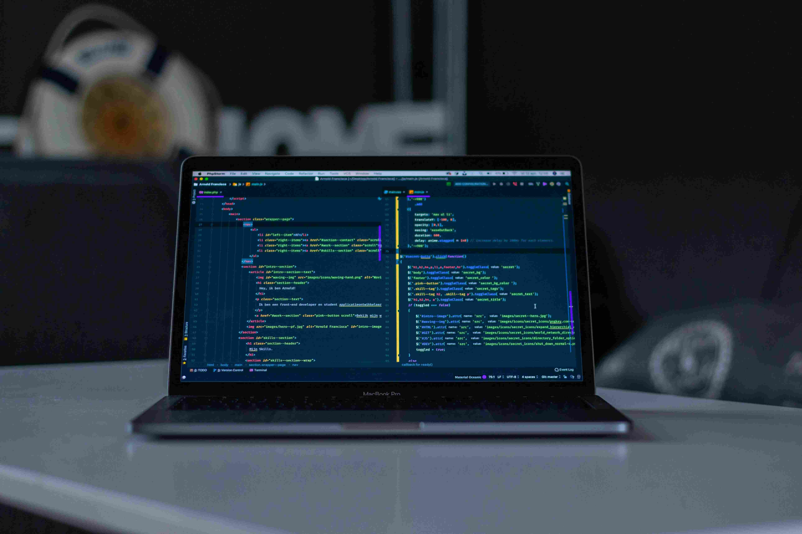

How I stay committed to learning
I like to think of myself as a lifelong learner. I used to spend hours and hours learning, then try to create simple projects using what I learned or work new techniques into existing projects.
While that was fun, I felt like it would be helpful to share what I was learning and most things about my journey with the world.
How I got started
I started simple and gradually grew my learning journal site. I would take notes about what I was learning. After each learning session, I'd use my notes to not only reflect on what I learned but also write short summaries of what I learned using my own words
That helped me grok what I was learning, and I realized that posting my learning summarieswas also helping others learn and stay motivated.

February 06, 2024
Blog One
I'm excited to start a new learning journey as a Scrimba Bootcamp student! After several months of learning in the Frontend Developer Career Path.
February 06, 2024
Blog Two
I'm excited to start a new learning journey as a Scrimba Bootcamp student! After several months of learning in the Frontend Developer Career Path.
February 06, 2024
Blog Three
I'm excited to start a new learning journey as a Scrimba Bootcamp student! After several months of learning in the Frontend Developer Career Path.
February 06, 2024
Blog Four
I'm excited to start a new learning journey as a Scrimba Bootcamp student! After several months of learning in the Frontend Developer Career Path.
February 06, 2024
Blog Five
I'm excited to start a new learning journey as a Scrimba Bootcamp student! After several months of learning in the Frontend Developer Career Path.
February 06, 2024
Blog Six
I'm excited to start a new learning journey as a Scrimba Bootcamp student! After several months of learning in the Frontend Developer Career Path.